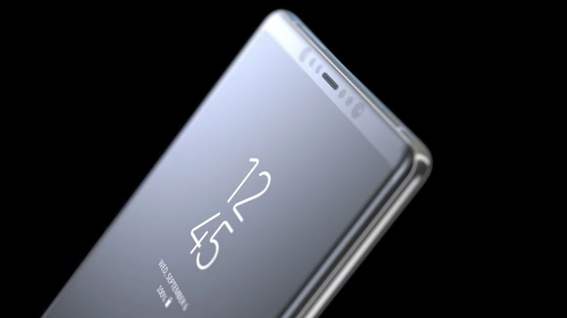

¿iOS o Android? ¿Quién va mejor?
Por: Raúl Omar Escamilla Guevara
@rulo_escamilla
Siempre que comparamos smartphones Android con el iPhone de Apple podemos observar una característica que es muy superior en los primeros, me refiero a la cantidad de memoria RAM, cosa que nos lleva a una pregunta. ¿Qué sistema operativo consume más RAM?.
Es por eso que viendo esta gran diferencia muchos de los usuarios se preguntan si esto se debe al consumo de RAM en ambos sistemas operativos. Así que vamos a saber realmente si iOS necesita menos que Android, o es todo lo contrario.
¿Quién consume menos RAM?
En un principio podemos afirmar que el sistema operativo de Apple tiene un consumo más reducido de esta memoria. Pero esto no se puede argumentar con lo típico de: ‘es que el iPhone tiene menos RAM, por algo será’. No, la clave está en la dosificación de dicha memoria.
Al parecer en iOS las aplicaciones consumen menos recursos, y la culpa de esto la tiene el sistema operativo que es capaz de dosificar de mejor manera este medio. Según Tech Viral, cuando un usuario no está utilizando una aplicación de forma activa, es decir, la tiene en segundo plano, esta puede estar gastando más o menos recursos, y al parecer el iPhone realiza mejor esta tarea
Por ejemplo, una aplicación como un reproductor de música necesita estar ejecutándose aunque la pantalla del dispositivo esté apagada. O aplicaciones que están descargando contenido, estas no se ejecutan en primer plano, por lo que iOS en esos casos suele dosificar los recursos de mejor manera, como la RAM, incluso la batería en algunos casos.
iOS utiliza técnicas que se dividen en categorías
- Las aplicaciones que se ejecutan en primer plano para una tarea breve piden un período de tiempo para terminar la tarea cuando la aplicación sea movida a un segundo plano.
- Aquellas aplicaciones que inician descargas en primer plano pueden pasar a un segundo planoo ser suspendidas sin detener el proceso de descarga.
- Hay aplicaciones que necesitan funcionar en segundo plano para dar soporte a algunas tareaspueden declarar su apoyo para uno o más modos de ejecución en segundo plano
¿Qué significa esto? Resumiendo, iOS tiene una planificación de su memoria RAM envidiable. Y nos lo dice un usuario de Android, pero las cosas como son, en ocasiones la cantidad de RAM no es lo más importante y en el caso del iPhone podemos ver que mueve prácticamente todas sus apps sin ningún problema.
¿Qué ocurre en Android?
La principal diferencia entre ambos sistemas operativos se encuentra en los hilos de ejecución que utilizan. En el caso de iOS estos hilos se encuentran separados por prioridad en tiempo real, sin embargo, en Android todo sucede en el hilo principal, por lo que pueden haber aplicaciones que usen recursos como por ejemplo, el procesador, y finalmente esto se traduce en un retraso en la fluidez de algunos terminales.
Así que es cierto que los terminales Android necesitan cantidades más elevadas de memoria RAM, para poder mejorar el rendimiento del terminal ya que en ocasiones el software no acompaña de la mejor manera.
Aunque también hay que hacer un apunte, cuando hablamos de Android Stock o capas de personalización bien implementadas es otra historia, sin embargo, existen algunas capas que no ayudan al buen funcionamiento del dispositivo. Así que la respuesta es clara, iOS consume menos memoria RAM que Android.
Artículos Relacionados
iPhone 8: ¿Diseño final? Olixar muestra sus fundas para el iPhone8
Año tras año año, solemos ver al inicio de las ventas y, o reservas de fundas para los siguientes modelos de iPhone, antes de que estos se presenten de forma oficial. Pero en este caso la compañía de fundas y accesorios para los dispositivos móviles Olixar se adelanto bastante, dejando ver las fundas y protectores de pantalla para un nuevo modelo de iPhone.
IMAC PRO

Apple ha presentado uno de sus dispositivos de más alta gama que le ha llamado iMac Pro, también en la WWDC 2017 presento renovación del MacBook, MacBook Pro, iMac, y iMac Pro.
iPhone 8: ¿Diseño final? Olixar muestra sus fundas para el iPhone8
Según el sitio asiatico “The Bell” lo mismo que sucedió con el Note 7, samsung planea ponerse un paso adelante con la presentación del nuevo Note 8 en un evento a principios de Agosto.